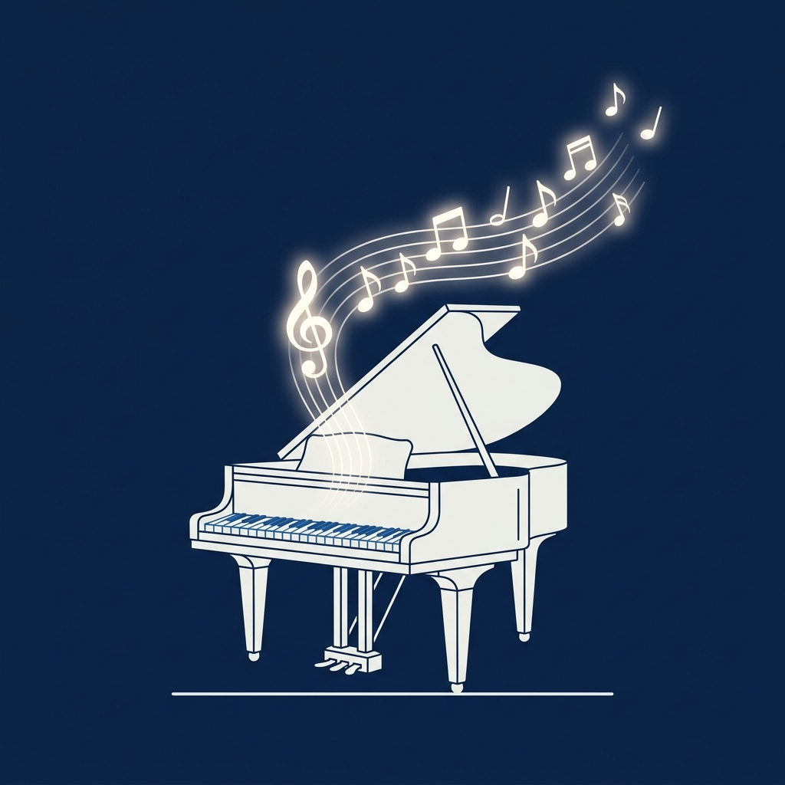
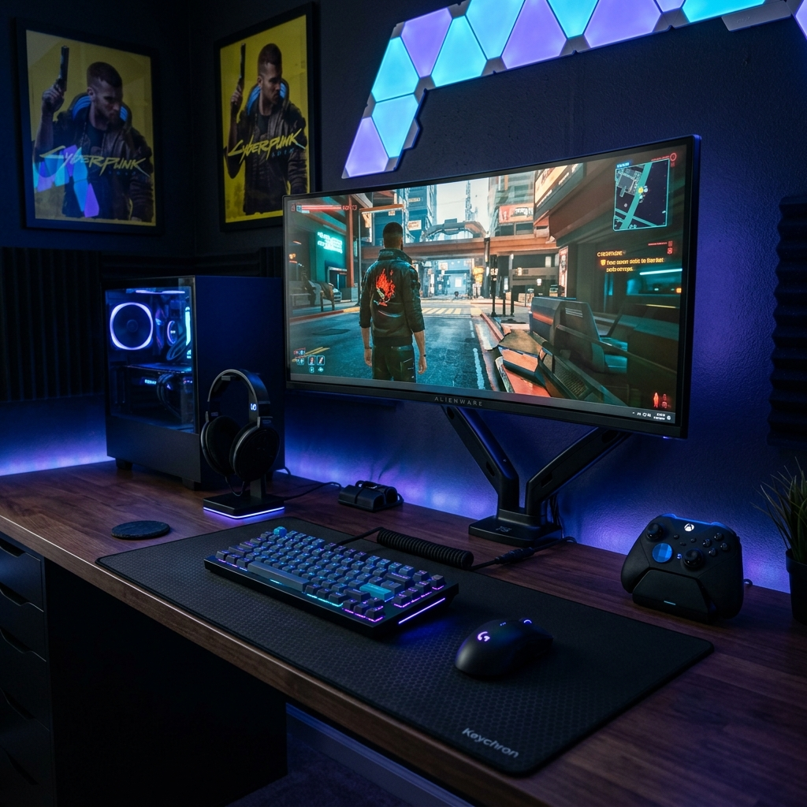

Mi Pasión por el Piano
Tocar el piano es una de mis actividades favoritas. Me ayuda a relajarme, desarrollar la concentración y expresar emociones a través de la música. Es un arte hermoso que requiere paciencia y constancia.

Compartiendo ideas sobre música, videojuegos y programación
Tocar el piano es una de mis actividades favoritas. Me ayuda a relajarme, desarrollar la concentración y expresar emociones a través de la música. Es un arte hermoso que requiere paciencia y constancia.

Los videojuegos son mi otra gran pasión. Llevo mucho tiempo jugando competitivamente a Rainbow Six (R6), donde disfruto de la estrategia y el trabajo en equipo. También me encantan los juegos de un solo jugador con grandes historias, como las sagas de BioShock, Wolfenstein, Metro, Fallout 4 y Skyrim. ¡Explorar estos mundos virtuales es increíble!
